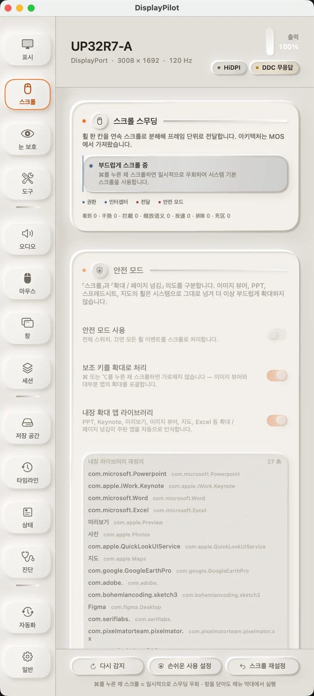

01 · 스크롤 스무딩
한 칸을 하나의 흐름으로
휠 한 칸은 더 이상 한 번의 점프가 아닙니다. 이벤트를 모았다가 화면 주사율에 맞춰 프레임마다 전달하며, 각 프레임은 pending × (1 − e^(−dt/τ))를 방출합니다. 감쇠가 프레임 수가 아니라 경과 시간으로 결정되므로 60Hz와 144Hz의 손맛이 같습니다. 오프라인 벤치마크에서 120Hz의 첫 프레임은 3포인트에서 9포인트로 좋아졌고, 90% 도달 시간은 158ms에서 133ms로 줄었습니다.
터미널, 이미지 뷰어, 슬라이드처럼 휠을 정밀 입력이나 확대로 다루는 창은 기본적으로 시스템에 돌려줍니다. ⌘를 누른 채 스크롤하면 언제든 네이티브 스크롤로 돌아갑니다. 스무딩은 기본적으로 꺼져 있으며, 켜지 않으면 휠을 가로채지 않습니다. 화면에는 '감지 / 제스처 / 가로챔 / 전달' 네 가지 실시간 카운터가 있어, 새 마우스에서 문제가 생기면 어느 계층에서 막히는지 바로 보입니다.
